第 21 讲：动画——关键帧、物理模拟、运动学与绑定
从关键帧插值到物理模拟、正向/逆向运动学与绑定，建立计算机动画的整体框架。
◆ 学完这一讲，你应该能
能解释关键帧动画中“关键帧”与“补间”的分工，并说明为什么线性插值通常不够好。
能写出显式欧拉积分更新位置与速度的公式，并指出其不稳定性的来源。
能说明弹簧质点系统中弹簧力、阻尼力的作用，以及结构连接方式如何决定材质行为。
能区分正向运动学（FK）与逆向运动学（IK）的输入输出，并说明 IK 为什么难。
能列举绑定（Rigging）、混合变形（Blend Shapes）与动作捕捉（Motion Capture）在角色动画中的作用与代价。
核心结论速记
动画的本质是把场景模型表示为时间的函数，输出连续帧序列产生运动感。
关键帧动画由动画师给出关键姿态，计算机或助手生成中间帧（补间），每个参数通常用样条而非线性插值。
物理模拟基于牛顿第二定律，用数值积分（如显式欧拉）逐步更新位置与速度。
弹簧质点系统中，弹簧力正比于形变（胡克定律），需要非零静止长度与阻尼来避免永久振荡。
粒子系统用大量粒子加简单力（引力、斥力、阻尼、碰撞）模拟流体、鸟群等复杂现象。
正向运动学由关节角度算末端位置，逆向运动学由末端位置反求关节角度，后者有多解、无解与数值求解问题。
绑定是角色上的高层控制，混合变形直接插值顶点位置，动作捕捉用真实数据驱动动画但有成本与艺术调整问题。
011. 动画是什么：把模型变成时间的函数
计算机动画（Computer Animation）最直白的定义是“让东西活起来”。课件把它看作建模的延伸：静态场景描述的是“物体长什么样”，动画则把场景模型表示成时间的函数，输出一串按顺序播放的图片，从而产生运动感。
这里有两个关键点。第一，动画既是沟通工具也是艺术载体，课件特别指出美学问题常常主导技术问题——技术再正确，动作不好看观众也不会买账。第二，播放的载体不同，帧率要求不同：电影通常 24 fps，一般视频常见 24/30/60 fps，虚拟现实则需要更高帧率（通常 90 fps 以上）来避免眩晕。
从历史看，动画从伊朗沙赫尔-苏赫特的陶碗图案（约公元前 3200 年）、1831 年的费纳奇镜，到 1878 年迈布里奇的奔马照片、1937 年迪士尼《白雪公主》、1963 年 Sutherland 的 Sketchpad、1993 年《侏罗纪公园》的数码恐龙、1995 年皮克斯《玩具总动员》，直到近年的《冰雪奇缘》等，技术演进始终围绕“如何更高效、更真实地生成运动”。
这一讲的主线可以概括为四条：关键帧动画、物理模拟、运动学（正向与逆向）、绑定与动作捕捉。它们不是互斥的，实际制作中经常混用：角色主体用关键帧或动捕，衣服头发用物理模拟，面部用混合变形。
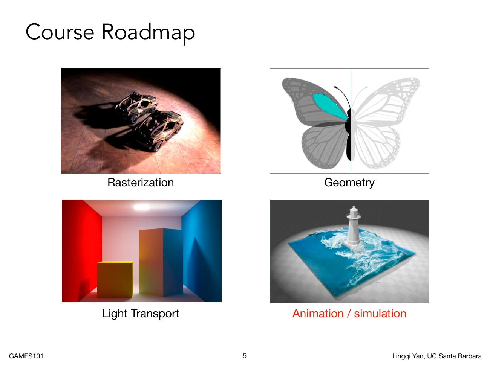
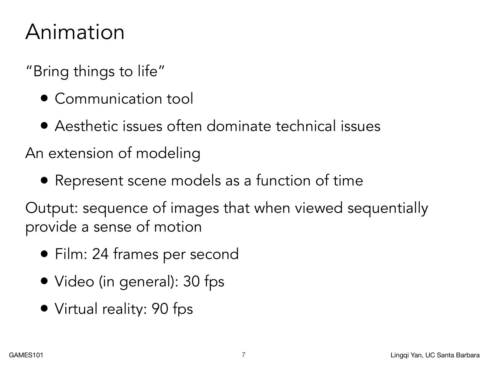
常见坑
把动画等同于“逐帧手绘”→ 现代 3D 动画大量依赖插值、模拟与程序化生成，逐帧只是其中一种手段。
忽视帧率与时间步长的关系→ 模拟和播放速度会随帧率变化→ 物理模拟应使用固定时间步长或做时间步长补偿。
UE / Unity 落地
UE：Sequencer 与 Level Sequence 就是把场景参数表示为时间曲线的工具；Unity：Timeline 同理。
UE 的帧率设置（Project Settings → Engine → Framerate）与 Unity 的 Time.captureFramerate 会影响录制与模拟步长。
022. 关键帧动画：关键姿态 + 补间
关键帧动画（Keyframe Animation）的工作方式很像传统手绘：主美或首席动画师只画关键帧（keyframes）——动作中最重要的几个姿态；助手（人或计算机）负责画中间帧（in-between frames，简称补间 tweening）。在 3D 中，每个关键帧可以看成一个参数向量，里面装着所有骨骼的旋转、位移、表情权重等数值。
于是问题变成：给定若干时刻的参数值，如何求任意时刻的参数值？最朴素的做法是线性插值（Linear Interpolation）： \[ p(t) = (1-\alpha)p_0 + \alpha p_1,\quad \alpha = \frac{t-t_0}{t_1-t_0} \] 但课件明确指出线性插值通常不够好：速度在关键帧处会突变，看起来“一顿一顿”的。解决办法是回到前面讲过的样条（splines）：用三次 Hermite 或 Catmull-Rom 样条，不仅插值位置，还能控制切线，从而得到平滑且可控的运动。实际 DCC 软件里每个关键帧都有“切线手柄”，本质就是样条插值。
工程上还要注意：旋转不能直接对欧拉角线性插值，否则会出现万向节死锁和路径异常；通常用四元数（quaternion）的球面插值（slerp）。
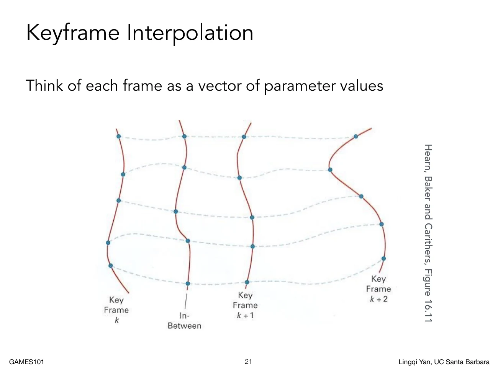
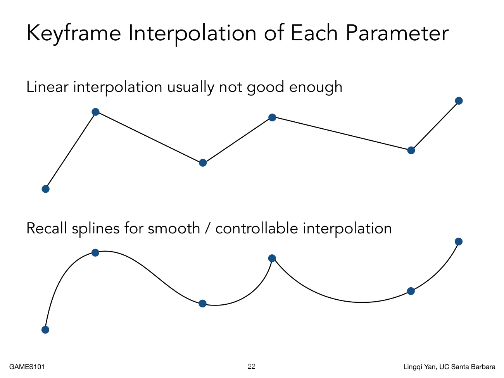
常见坑
对欧拉角直接线性插值→ 旋转路径怪异甚至翻转→ 改用四元数 slerp。
所有参数用同一条插值曲线→ 不同参数（如位移与表情）需要不同的切线控制→ 在 DCC/引擎中分别设置曲线。
关键帧间距过大且用线性插值→ 运动显得机械→ 增加关键帧或改用样条并调整切线。
UE / Unity 落地
UE：动画序列（AnimSequence）中的关键帧与曲线编辑器，支持自动/用户自定义切线；Unity：Animation 窗口的曲线（Curves）视图。
UE 的 AnimBlueprint 中可以对骨骼旋转使用四元数插值；Unity 的 Animator 内部对 Rotation 使用四元数插值。
033. 物理模拟：牛顿定律与数值积分
物理模拟（Physical Simulation）不靠动画师摆姿态，而是用数值方法“算”出运动。起点是牛顿第二定律： \[ F = ma \] 已知力、质量和当前状态，就能求出加速度 \( a = F/m \)。课件给出的显式欧拉（Explicit Euler）更新为： \[ v(t+\Delta t) = v(t) + \Delta t\, a(t) \] \[ x(t+\Delta t) = x(t) + \Delta t\, v(t) \] 注意课件中写的是 \( x_{t+\Delta t} = x_t + \Delta t\, v_t + (\Delta t)^2 a_t \) 的等价形式，本质相同：先更新速度，再用速度更新位置。
显式欧拉简单，但不稳定：时间步长稍大，弹簧系统就会爆炸（数值发散）。实践中常用半隐式欧拉（先更新速度再用新速度更新位置）、Verlet 积分或隐式方法。课件后面讲弹簧时也会看到，阻尼和刚度参数与时间步长必须匹配。
物理模拟的典型例子包括布料、流体、毛发、肌肉等。它的优点是真实、省去手 K 动画的工作量；缺点是参数难调、可能不稳定、艺术可控性差。
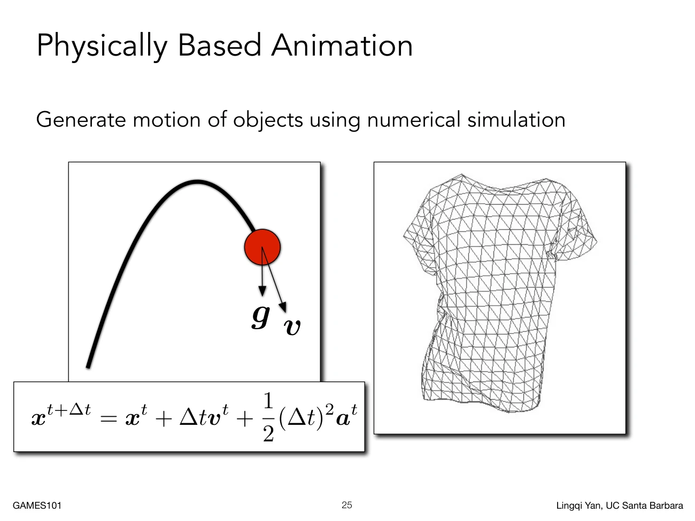
常见坑
时间步长过大→ 显式欧拉发散、物体飞走→ 减小步长或改用半隐式/隐式积分。
把渲染帧率直接当模拟步长→ 帧率波动导致模拟行为不一致→ 使用固定时间步长累加器。
弹簧刚度很大但步长不变→ 系统高频振荡甚至爆炸→ 提高刚度时同步减小步长或增加阻尼。
UE / Unity 落地
UE：Chaos Physics 与 Niagara 中的物理模拟；Unity：PhysX 与 Cloth 组件。
UE 的 Substepping（子步进）设置就是为小步长模拟准备的。
显式欧拉积分伪代码（cpp）
for each particle:
a = F / m;
v = v + dt * a;
x = x + dt * v;044. 弹簧质点系统：胡克定律、阻尼与结构
弹簧质点系统（Mass Spring System）是理解物理模拟最好的玩具模型。理想弹簧的力由胡克定律（Hooke's Law）给出： \[ f_{a\to b} = k_s (b - a) \] \[ f_{b\to a} = -f_{a\to b} \] 其中 \( k_s \) 是劲度系数。问题在于这个公式希望弹簧长度为零，不符合真实弹簧。于是引入静止长度（rest length） \( l \)： \[ f_{a\to b} = k_s \left( \|b-a\| - l \right) \frac{b-a}{\|b-a\|} \] 方向沿两点连线，大小正比于形变量。
但只有弹簧力，系统会永远振荡。需要阻尼（damping）。课件先给出简单的速度阻尼 \( f = -k_d \dot{b} \)，它像粘滞阻力，但会减慢所有运动，包括整体下落。更好的做法是内部阻尼：只阻尼弹簧方向上的相对速度，即把相对速度投影到弹簧方向再乘阻尼系数。这样整体平移不会被拖慢，只有弹簧自身的伸缩被衰减。
弹簧的连接结构决定材质行为：三角形网格抗剪切但可能各向异性；加对角线可改善；要抗弯曲还需要额外的红色弹簧（弯曲弹簧），且应比结构弹簧弱得多。课件用一系列图说明：行为由连接方式决定。
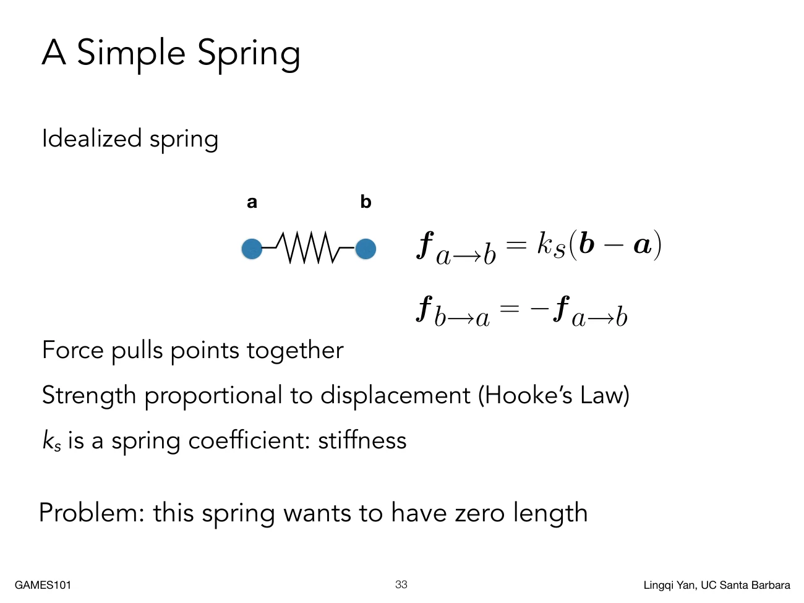
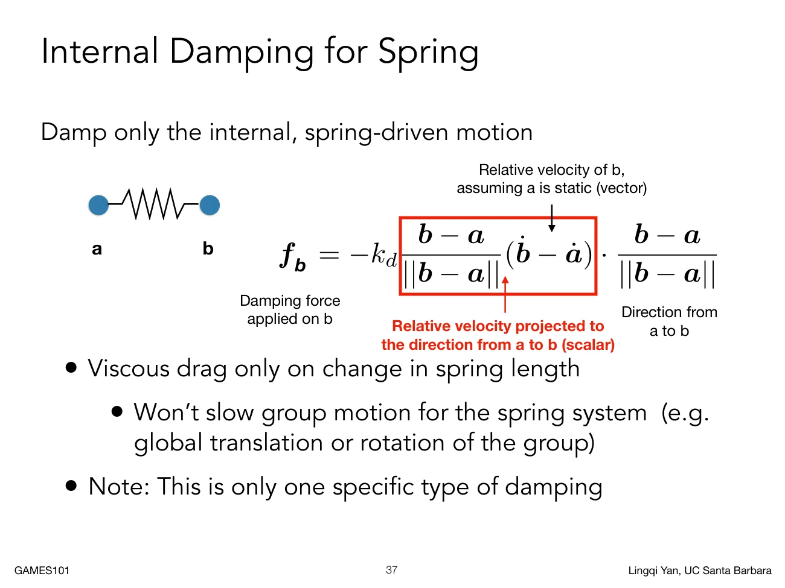
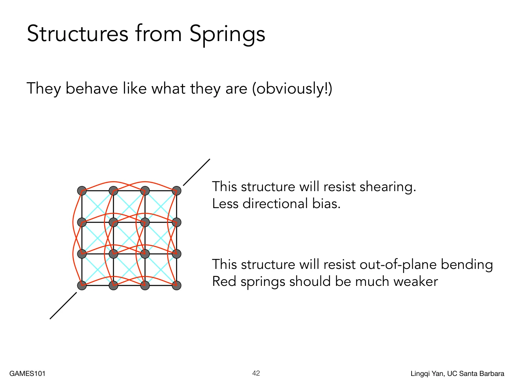
常见坑
忘记静止长度→ 所有弹簧收缩到一点→ 使用带 rest length 的公式。
只加全局速度阻尼→ 整体运动也被拖慢→ 改用内部阻尼（只阻尼弹簧方向相对速度）。
弯曲弹簧与结构弹簧同刚度→ 布料过硬、失去垂坠感→ 弯曲弹簧刚度取小值。
UE / Unity 落地
UE：Chaos Cloth 中的 Spring 参数（如 Spring Stiffness、Damping）对应这里的 \( k_s \) 与 \( k_d \)。
Unity：Cloth 组件的 Stretching Stiffness、Bending Stiffness 对应结构弹簧与弯曲弹簧。
055. 粒子系统：用大量简单粒子模拟复杂现象
粒子系统（Particle Systems）把动态系统建模为大量粒子的集合，每个粒子的运动由一组物理或非物理的力决定。它之所以在图形学和游戏里流行，是因为容易理解、容易实现、可扩展：想要快就少放粒子，想要细节就多放粒子。
每一帧的流程是固定的：
- 按需创建新粒子；
- 计算每个粒子受到的力；
- 更新位置与速度；
- 按需删除“死亡”粒子；
- 渲染粒子。
常见的力包括：引力/电磁力等吸引与排斥力、弹簧力与推进力；摩擦、空气阻力、粘滞等阻尼力；以及与墙壁、容器、固定物体、动态物体、角色身体的碰撞。
课件举了几个漂亮例子：星系模拟用牛顿万有引力 \( F_g = G m_1 m_2 / d^2 \)；基于粒子的流体（Position Based Fluids）；鸟群（flocking）用三条简单规则——向邻居中心吸引、与个体排斥、与邻居平均方向对齐——就能涌现出复杂行为；还有分子动力学、人群与岩石动力学。
粒子系统的挑战在于粒子数量大时需要加速结构（如空间哈希、KD 树）来找最近粒子，以及渲染大量粒子的开销。
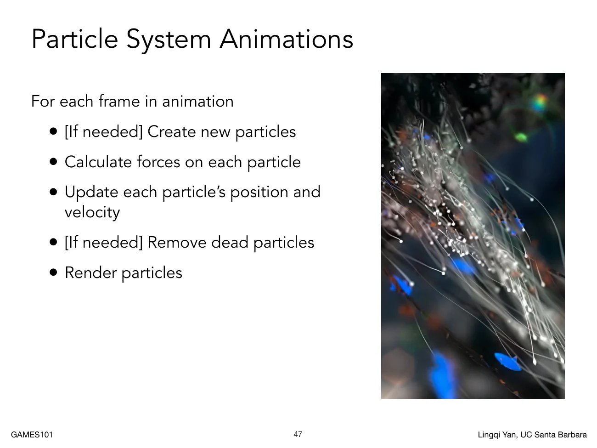
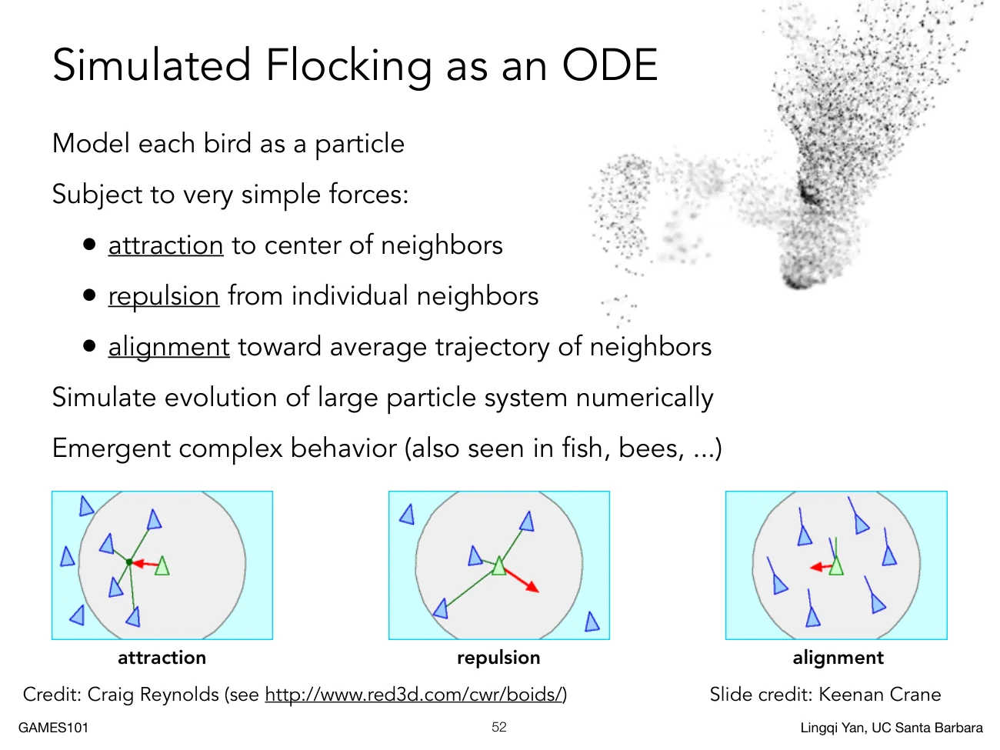
常见坑
粒子数量大时暴力找邻居→ 帧率骤降→ 使用空间哈希或网格加速。
每帧无条件创建粒子→ 粒子数爆炸→ 设置生命周期与最大数量。
碰撞只处理静态墙→ 粒子穿过角色→ 加入动态物体碰撞体或简化碰撞代理。
UE / Unity 落地
UE：Niagara 粒子系统，支持力模块、碰撞、GPU 粒子；Unity：Particle System 与 VFX Graph。
Niagara 中的 Gravity、Drag、Collision 模块分别对应课件中的引力、阻尼与碰撞力。
066. 正向运动学：从关节角度算末端位置
运动学（Kinematics）研究位置、速度、加速度的几何关系，不考虑力。角色骨架是一个关节（joint）组成的树结构：根节点连接躯干，再分叉到四肢和头。关节类型包括铰链关节（1D 旋转）、球关节（2D 旋转）和平移关节（prismatic joint）。
正向运动学（Forward Kinematics, FK）的输入是每个关节的角度（随时间变化的曲线），输出是末端执行器（end-effector，比如手、脚）的位置。课件用二维两段手臂举例：给定肩关节角 \( \theta_1 \) 和肘关节角 \( \theta_2 \)，通过逐级变换矩阵相乘就能算出末端位置。
FK 的优点是直接控制方便、实现简单：动画师摆关节角度即可。缺点是动画可能与物理不一致（脚会穿地、滑步），而且对动画师来说调出自然姿态很耗时。
在引擎中，FK 就是骨骼动画的默认模式：动画曲线驱动每根骨骼的局部变换，再沿层级累乘得到世界变换。
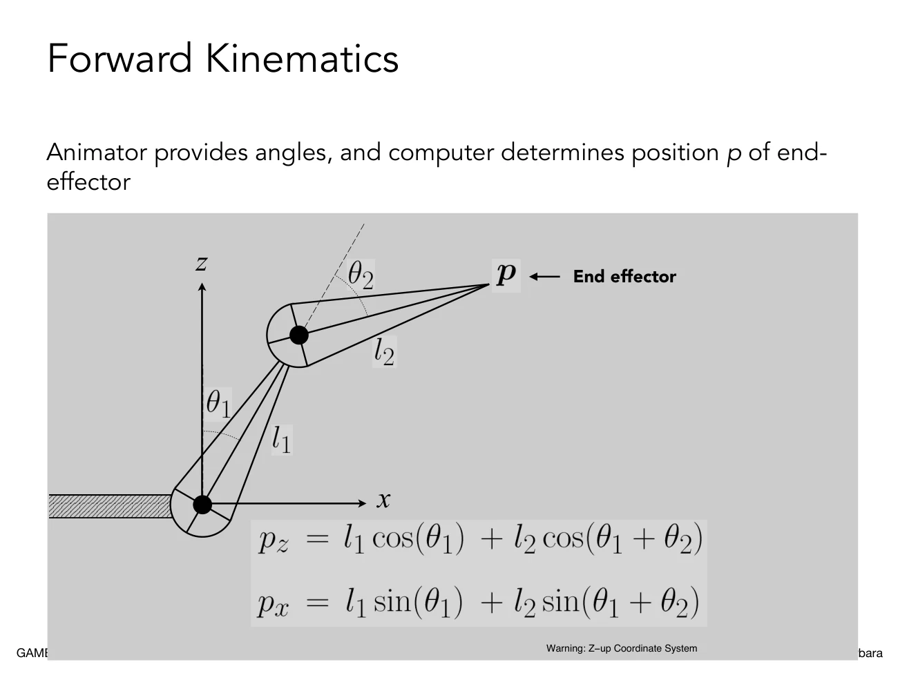
常见坑
关节层级顺序搞错→ 末端位置完全错误→ 按父子关系从根到叶累乘变换。
忽略旋转顺序→ 欧拉角组合结果与预期不符→ 明确旋转顺序或使用四元数。
FK 下脚部穿地→ 动画与地形不匹配→ 结合 IK 或脚部锁定（foot locking）。
UE / Unity 落地
UE：Skeletal Mesh 的骨骼层级与 AnimBlueprint 中的 FK 节点；Unity：Animator 的骨骼层级。
UE 的 Control Rig 可以在 FK 基础上叠加程序化调整。
077. 逆向运动学：从末端位置反求关节角度
逆向运动学（Inverse Kinematics, IK）反过来：动画师给出末端执行器的目标位置，计算机求满足约束的关节角度。两段手臂可以解析求解（余弦定理），但一般 N 连杆问题很难，原因有三：
- 多解：同一个末端位置可能对应多组关节角度（肘部朝上或朝下）；
- 可能无解：目标超出可达范围；
- 高维非线性：关节多时解析解不存在。
通用做法是数值优化：选一个初始姿态，定义误差度量（如末端到目标的距离平方），计算误差对关节角的梯度，然后做梯度下降（或牛顿法）。课件还提到基于风格的 IK（Style-Based IK），用真实动作数据约束解，使结果更自然。
IK 在游戏里非常常用：脚部贴地、手部抓取、看向目标（look-at）、攀爬等。
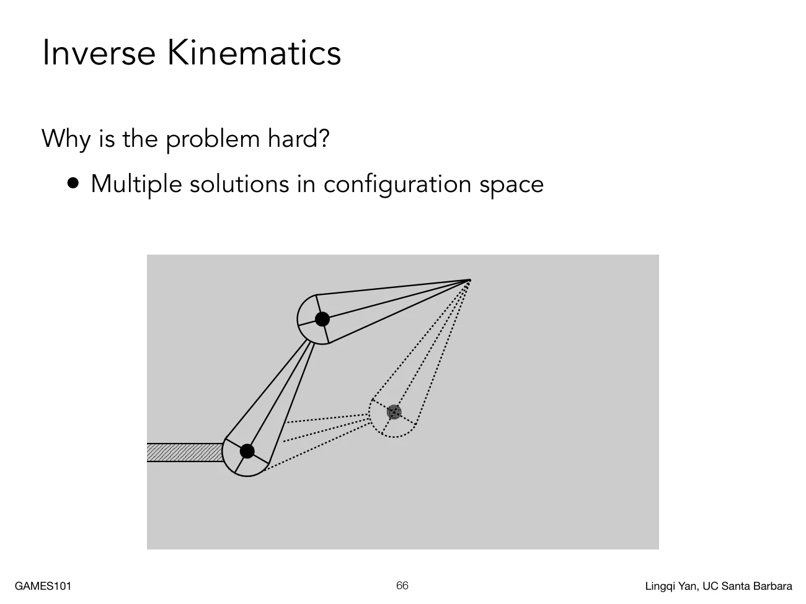
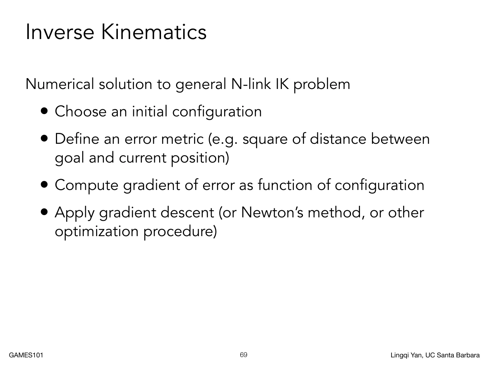
常见坑
目标不可达→ 求解器抖动或报错→ 先做可达性检查并钳制目标。
初始姿态选得差→ 收敛到不自然的解→ 用上一帧姿态做初值或加风格约束。
只做位置 IK 不做旋转约束→ 手部朝向怪异→ 同时约束末端旋转。
UE / Unity 落地
UE：AnimBlueprint 中的 Two Bone IK、FABRIK 节点，以及 Control Rig 的 IK 求解器。
Unity：Animation Rigging 包中的 TwoBoneIKConstraint、ChainIKConstraint。
088. 绑定、混合变形与动作捕捉
绑定（Rigging）是在角色上搭建一套高层控制，让动画师能快速直观地修改姿态、形变和表情。课件把它比作提线木偶的绳子：它捕捉角色所有有意义的变形，但每个角色都不一样，制作成本高，需要艺术与技术双重训练。
混合变形（Blend Shapes）不走骨骼，而是直接插值表面顶点位置。典型用法是面部表情：建模一组表情（微笑、皱眉等），运行时对顶点位置做线性组合，权重随时间用样条控制。它的优点是表情细腻、实现直接；缺点是数据量大、拓扑必须一致。
动作捕捉（Motion Capture）是数据驱动方法：记录真实表演，提取姿态随时间的变化。设备分光学（反光标记点 + 红外相机 + 三角定位）、电磁、机械等。优点是能快速获取大量真实数据、真实感高；缺点是场地昂贵复杂，捕捉结果未必符合艺术需求，需要后期修改。
课件最后提到面部动画的恐怖谷（Uncanny Valley）：当人造角色接近真人但又不完全像时，观众情绪反应会变负面，直到真实度足够高才回升。这也是为什么很多动画角色选择卡通化风格。
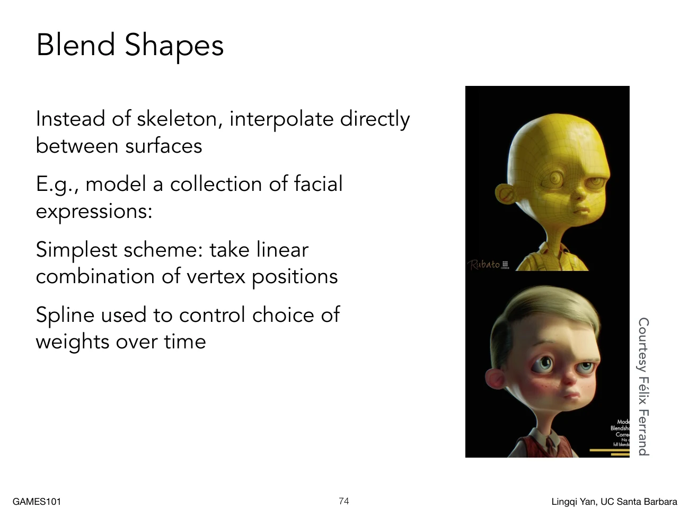
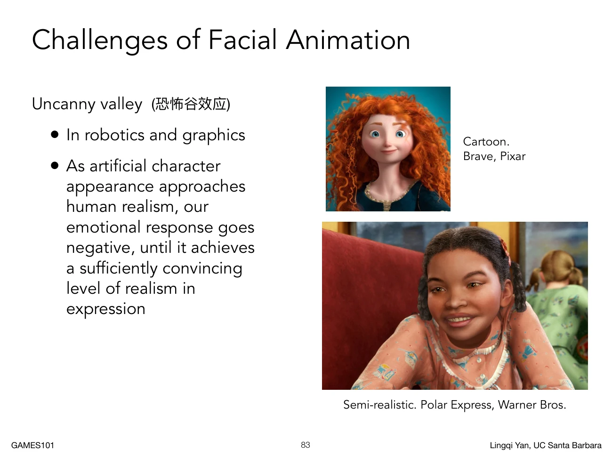
常见坑
混合变形拓扑不一致→ 无法插值→ 所有表情必须基于同一拓扑。
动捕数据直接使用→ 脚滑、穿模→ 做清理与重定向（retargeting）。
面部追求极致写实但细节不足→ 掉入恐怖谷→ 选择风格化或补足微表情。
UE / Unity 落地
UE：Skeletal Mesh 的 Morph Target 对应 Blend Shapes；Live Link 支持动捕数据流。
Unity：Skinned Mesh Renderer 的 Blend Shapes；Animation Rigging 用于绑定控制。
引擎对照表
| 概念 / 效果 | Unreal Engine | Unity |
|---|---|---|
关键帧与曲线编辑 | AnimSequence 曲线编辑器 / Sequencer | Animation 窗口 Curves |
骨骼层级与 FK | Skeletal Mesh 骨骼树 + AnimBlueprint | Animator 骨骼层级 |
逆向运动学 | Two Bone IK / FABRIK 节点、Control Rig | Animation Rigging 约束 |
布料/弹簧模拟 | Chaos Cloth 的 Stiffness/Damping | Cloth 组件 Stretching/Bending Stiffness |
粒子系统 | Niagara | Particle System / VFX Graph |
面部混合变形 | Morph Target | Blend Shapes |
术语双语表
| English | 中文 | 说明 |
|---|---|---|
| Keyframe Animation | 关键帧动画 | 动画师给出关键姿态，计算机补间生成中间帧。 |
| Tweening | 补间 | 在关键帧之间生成中间帧的过程。 |
| Explicit Euler | 显式欧拉积分 | 用当前速度与加速度直接更新下一时刻状态，简单但可能不稳定。 |
| Hooke's Law | 胡克定律 | 弹簧力正比于形变量，方向沿弹簧轴线。 |
| Damping | 阻尼 | 消耗系统能量、抑制振荡的力，分全局速度阻尼与内部阻尼。 |
| Particle System | 粒子系统 | 用大量粒子加简单力模拟流体、鸟群等复杂现象。 |
| Forward Kinematics | 正向运动学 | 由关节角度计算末端位置。 |
| Inverse Kinematics | 逆向运动学 | 由末端目标位置反求关节角度，常有多解或无解。 |
| Rigging | 绑定 | 角色上的高层控制层，便于快速调整姿态与表情。 |
| Blend Shapes | 混合变形 | 直接对顶点位置做线性组合生成表情等形变。 |
| Uncanny Valley | 恐怖谷 | 人造角色接近真人但不够真时，观众情绪反应变负面的现象。 |
课后练习
01 显式欧拉积分中，如果时间步长 \( \Delta t \) 取得过大，弹簧质点系统会发生什么？为什么？
查看答案
提示：
考虑弹簧力随形变增大，而速度更新又放大位移。
系统会数值发散（爆炸）。因为显式欧拉用当前力更新速度、再用速度更新位置，步长过大时每一步的修正量超过真实解，误差被逐帧放大，弹簧振荡幅度越来越大。解决方法是减小步长、改用半隐式欧拉或隐式积分，并配合阻尼。
02 一根弹簧连接点 a=(0,0) 与 b=(3,0)，静止长度 l=1，劲度系数 k_s=2。求 a 对 b 的弹簧力向量。
查看答案
提示：
先算方向单位向量与形变量。
b-a=(3,0)，长度 3，单位方向 (1,0)。形变量为 3-1=2。力大小 k_s*2=4，方向从 a 指向 b，所以 f_{a→b}=(4,0)。
03 正向运动学与逆向运动学的输入输出分别是什么？为什么 IK 通常比 FK 难？
查看答案
提示：
从“多解、无解、非线性”三个角度回答。
FK 输入关节角度，输出末端位置；IK 输入末端目标位置，输出关节角度。IK 难在三方面：配置空间多解（肘部朝向不唯一）、目标可能不可达导致无解、N 连杆高维非线性一般没有解析解，需要数值优化。
04 在引擎中实现布料时，为什么弯曲弹簧（bending spring）的刚度要远小于结构弹簧？
查看答案
提示：
想想布料应该柔软垂坠还是像纸板。
结构弹簧负责抗拉伸和剪切，需要较大刚度保持布料尺寸；弯曲弹簧只负责抗弯，如果刚度过大会让布料像硬纸板，失去垂坠和褶皱。因此弯曲弹簧应明显弱于结构弹簧。
05 设计一个简单的鸟群粒子系统，写出每帧对每只鸟施加的三条规则及对应的力方向。
查看答案
提示：
参考课件中的 attraction、repulsion、alignment。
1）吸引：指向邻居中心，力方向朝邻居平均位置；2）排斥：远离过近的个体，力方向沿个体到邻居的反方向；3）对齐：朝邻居平均速度方向调整，力方向为平均速度与本鸟速度之差。三者加权求和后积分更新位置与速度。